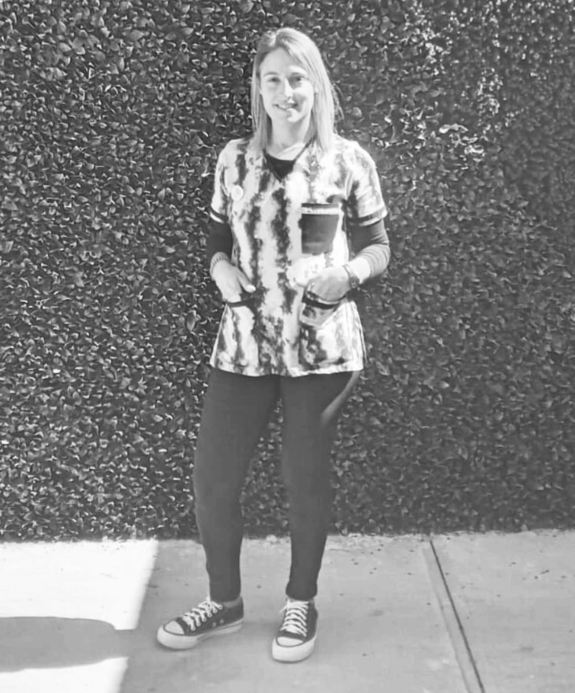

Anahí Etcheverry
Asesora en lactancia
- Soy Anahi Etcheverry .Vivo en la ciudad de Gualeguaychu, Entre Rios.
Comencé a formarme como Asesora desde el nacimiento de mi hijo , que despertó en mí el amor por acompañar Lactancias.
- Soy Asesora en Lactancia, Doula y Acompañante en duelo gestacional y perinatal.
Actualmente trabajo en un centro de Salud de mi ciudad. También lo hago de forma particular, brindando consultas y talleres para embarazadas y familias
Me encanta aprender y seguir sumando conocimientos para enriquecer mi trabajo, tales como masterclass en Lactancia Materna, entre otros.
¿Por qué pedirías una cita online conmigo?
Amo mi trabajo, me apasiona acompañar a la mujer y la familia en esta etapa movilizadora y transformadora de la vida.
Preparo y asisto a la Mama, desde el embarazo, para que pueda sostener y alimentar a su hijo sin miedo ni frustraciones.
Me encantaría conocerte! Te espero para una consulta virtual o presencial.
Gabriela Parra
Nutricionista
- Soy Gabriela Parra, Licenciada en Nutrición y Dietética (Universidad Central de Venezuela), residenciada en Buenos Aires, Argentina.
- Durante 10 años he tenido experiencia en Docencia, en Gastronomía y en el área Clínica, con el manejo nutricional de adultos, embarazadas, niños y adultos mayores.
- Actualmente, me encuentro sumando conocimientos de Alimentación Basada en Plantas. Colaboro como voluntaria en la coordinación de
Comunicación y Redes Sociales, de la Asociación de Nutricionistas Venezolanos en Argentina. Y me apasiona el diseño, así que mi
lado creativo lo uso para generar contenido y planes de alimentación que sean atractivos.
¿Por qué pedirías una cita online conmigo?
Porque puedo acompañarte en el trayecto de formar nuevos y duraderos hábitos que mejoren tu salud,
aprenderías a comer, a organizarte y podrías compartir ese conocimiento a los tuyos.

Lucas Shapiro
Asesor en lactancia
- Me llamo Lucas Shapiro, de Gualeguaychú Entre Ríos, Argentina.
- Soy asesor en Lactancia, doula, acompañante en duelo gestacional y perinatal. Futuro puericultor.
- Tambien relizo y relicé Master Class con distintos enfoques profesionales de la salud, con todo lo relacionado con la lactancia materna.
- Estoy haciendo Asesorías y consejerías de Lactancia en un Atención primaria de la salud (CAPS) Como también lo hago particular de forma Presencial y Virtual, brindando diferentes consultas y talleres para embarazadas y familias.
¿Por qué pedirías una cita online conmigo?
Acompaño y apoyo a las mujeres en el camino de la Lactancia, desde la gestación, hasta los primeros años de vida de sus hijos: brindando SIEMPRE información, apoyo, sostén
y asistencia en cada una de estas etapas, con empatía, sin juicios, brindando información actualizada en base de evidencia científica.
Guillermina de Jonge
Psicóloga
- Mi nombre es Guillermina de Jonge. Soy licenciada en psicología, egresada de la Universidad Abierta Interamericana (UAI).
- Actualmente trabajo en el área clínica con niños, adolescentes y adultos.
- También tengo experiencia en discapacidad y psiquiatría, entre otras ramas de la profesión.
¿Por qué pedirías una cita online conmigo?
Creo en la psicología como una herramienta fundamental para el autoconocimiento y la
superación personal, desde un espacio de intercambio de historias y saberes propios y ajenos. Es por eso, que te invito a participar de esta propuesta.